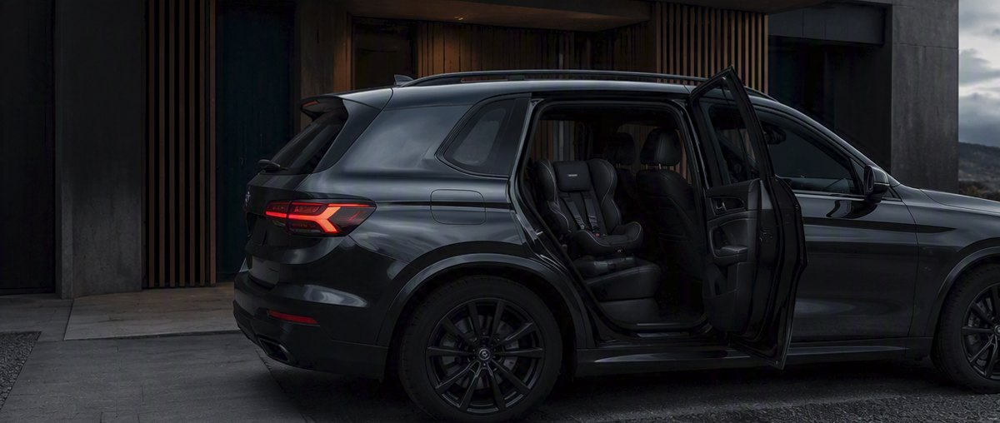

Legg hero-bildet i
bilder/hero.jpg
Uavhengig og gratis · ingen reklame · ingen provisjon
Vi skal måle baksetet i norske familiebiler, bil for bil. Hvert svar skal få et tillitsnivå og en begrunnelse, også når svaret er at vi ikke vet.
Meld deg påIkke en liste over hva som passer eller ikke. Hver stol skal vises med tillitsnivå og begrunnelse, også når svaret er «Ikke testet».
Eksempel – ikke en ekte vurdering
Merkelappene viser hvor sikre vi er, ikke bare om setet passer. Bekreftet: prøvemontert i akkurat denne bilen, eller oppført av produsenten i deres egen liste over biler setet passer i. Sannsynlig: utledet fra mål eller en nært beslektet bil, men ikke prøvd. Vi merker det alltid som utledet. Ikke testet: vi vet ikke. Det betyr verken at setet passer eller at det ikke passer. Frarådes: vi kjenner til et problem. Vi sier alltid hva problemet er og hvor vi har det fra. Uansett nivå: prøvemonter setet og følg bruksanvisningen.
Vi har ikke målt noen biler ennå. Vi begynner med de bilene folk faktisk har, så fortell oss hvilken du kjører. Det hjelper oss å velge hvilke biler vi måler først.
Vil du måle din egen bil? Meld deg på, så sender vi måleinstruksen når den er klar. Mål du tar selv, gir aldri mer enn «Sannsynlig», aldri «Bekreftet».